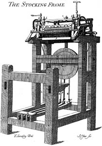
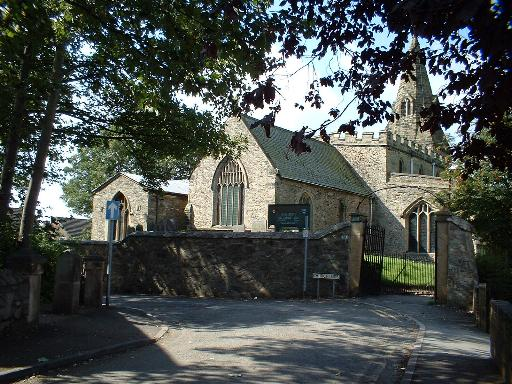
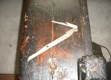

Ward has been a common name in Leicestershire during the last 200 years and as such it is one that has been difficult to track. Our earliest family member is John Ward who marries Sarah James in Shepshed Leicestershire in October 1770. They have twelve children, their fourth child being George James Ward born in Shepshed (or Sheepshead) in 1773. George became a framework knitter which was a popular trade in the East Midlands at the time and one that in the 18th century would have provided a subsistence living to support a family. The framework knitting machine, or stocking frame, was used by weavers at home to produce woven stockings. The knitting machine was usually leased from a machine owner and in some cases workers were paid with tokens.


George married Mary Mowbray at Shepshed in 1803 and the couple had three children, that we are aware of, two daughters and a son. Their son Thomas followed his father into the knitting industry but as a sinker maker rather than a framework knitter. Every stocking frame (and there were hundreds in Leicestershire) contained hundreds of sinkers, jack sinkers and fixed sinkers. This was a specialised trade to make these by the hundred, for the framesmith who built the knitting machines. By 1841 the widowed Mary Ward was living with her two daughters, also widowed and six grandchildren, at Church Street Shepshed. Mary, at 65 is not shown as having an occupation, but both daughters are described as Framework Knitters,

Thomas Ward married Lucy Tong at All Saints Loughborough in 1832 and by the 1841 census they were living in Pinfold Gate Loughborough with their six children including 3 week old Harriett. The family appear to have become Baptists as their first three children were all baptised in the Loughborough General Baptist Meeting House. By 1851 the family had moved to Wellington Street Loughborough and they had a seventh child, Louisa, who had been born in 1845. Louisa's father, Thomas, died before Louisa was 16. By 1861 Louisa and her mother were living alone in Craddock Street and each was described as an Angola Hosiery Sempstress. The manufacture of what was termed 'Angola Hosiery' was confined mainly to Loughborough and was hosiery manufactured from soft wool from the Angola sheep, mixed with cotton.
Louisa met and married Henry Warren , a coachmaker. Although both of them were from Loughborough they married in Leicester in November 1864. Henry must have earned a good living as from her marriage Louisa become a housewife without the need to work. The couple settled in Leicester initially before moving to Newport Pagnell and eventually back to Loughborough by about 1880. Their eldest daughter Lucy Warren was born in Leicester in 1871.
Louisa Warren (nee Ward) died in Loughborough in 1931.
Current Research : Looking for the origins of the Ward family, probably in 18th century Leicestershire, namely the birth of John Ward and his wife Sarah James in about 1750.
October 17, 2011